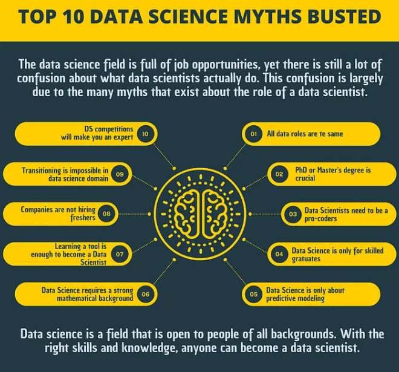

Data science is a rapidly growing field that is often misunderstood. In this blog post, we will debunk common myths surrounding data science and reveal the realities of what a career in this field entails.
Reality: While statistics are important, data science also involves programming, data engineering, and domain expertise.
Reality: Many successful data scientists come from diverse educational backgrounds and don't hold advanced degrees.
Reality: Data science can work with small datasets and often focuses on extracting insights from them effectively.
Reality: While automation is a part of the process, human intuition and decision-making remain crucial.
Reality: Data scientists often collaborate with stakeholders and communicate findings to non-technical audiences.
Recent advancements in data science are revolutionizing healthcare, enabling predictive analytics that improve patient outcomes and streamline operations.
The discussion around ethics in AI and data science is gaining momentum, with organizations focusing on responsible data usage and fairness in algorithms.
Understanding the realities behind data science is essential for aspiring professionals in the field. By debunking myths, we can foster a more accurate perception of what data science entails and its potential to shape our future.